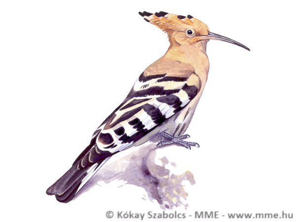

Búbos banka
Leírás és életmód
Hosszútávú vonuló, a telet Afrikában tölti. Főként rovarokat, férgeket, hernyókat, tücsköket, bogarakat, sáskát, vagyis csak állati eredetű táplálékot fogyaszt. Röpte lepkeszerűen hullámzó. Táplálékkeresés közben sokat mozog a talajon, ilyenkor kevésbé feltűnő. Az állattartó telepek körül találkozhatunk vele leggyakrabban, mert a szerves trágyában előforduló rovarokat, férgeket előszeretettel fogyasztja. A mezőgazdaság intenzívvé válása kedvezőtlenül hat az állomány nagyságára. A kisparcellás, extenzív mezőgazdaság növelésével pozitív hatást érhetünk el a faj elterjedésében.
Élőhelye, költése
Hazánkban a sűrű, zárt erdők kivételével mindenütt előfordulhat, de leginkább a mozaikos mezőgazdasági területeket, gyümölcsösöket, szőlősöket, puhafás ligeterdőket kedveli. Kisebb településeken, falvakban is sokszor látni, akár költhet is az épületek (fészerek, ólak, istállók) kisebb üregeiben. Harkályok odúit szívesen elfoglalja, de kidőlt, korhadt fák üregeiben, kőrakásokban, üregekben bárhol költhet, akár a talajszintben is. Az 5-10 piszkosfehér tojáson kizárólag a tojó kotlik, a hím a táplálékot hordja, a fiókák etetésében viszont mindkét szülő részt vesz. A népnyelv büdös bankának, vagy szurtos dudunak is hívja, mivel a fiókák veszélyérzet esetén bűzös ürüléket juttatnak vélt, vagy valós támadójukra. Ezen kívül maga a költőüreg is elég sok ürüléket tartalmaz, melyet a fiókák ürítenek ki magukból.
Madárgyűrűzési adatok:
- Magyarországon gyűrűzött madarak száma (1951-től): 2752 pld.
- Ebből a gyűrűzött fiókák száma: 1983 pld.
Adatok
| Elnevezés | |
| Magyar név: | Búbos banka |
| Tudományos név: | Upupa epops |
| Védelem | |
| Védelmi státusz: | védett |
| Természetvédelmi érték: | 50000 Ft |